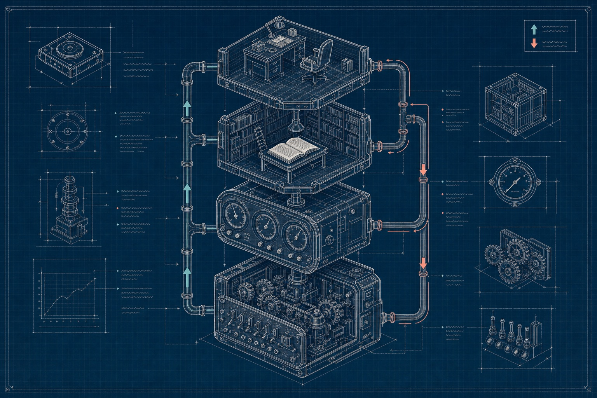

Level 3 301 · for engineers
Engineering a decision tier
A decision model in production is a measured component with a contract, not a prompt you tweak until it looks right. This page covers evaluation you can believe, the invariants that keep thresholds honest, adapters across vendors, determinism, and the operational habits that kept two systems running.

1. Evaluation you can believe
Before a held-out run
- Freeze and commit the rubric (the question set) and the thresholds first. Anything tuned on a window makes that window in-sample.
- Label every suppressed item. Then misses are exact, not estimated.
- Label a seeded random sample of escalated items for precision and a recall estimate. Report recall with a Wilson interval.
- Label blind. Labelers never see model scores. The human's rulings override provisional labels.
Reading the result
- Zero misses in a few hundred items doesn't prove 99% recall. About
3/nis a rough 95% upper bound on the miss rate when you saw zero misses in n (the "rule of three"). - Windows are correlated (same senders, same habits), so a strong month is weaker evidence than it looks.
- Replaying logged scores under a new rule set is great for debugging, but it's in-sample whenever those months shaped the rules.
- Always compare against baselines. Escalate-everything has 100% recall and filters nothing. Simple conservative rules gave 72% recall at 20% filtered.
Three held-out months, honestly reported
| Month | Filtered (zero LLM tokens) | Misses | Est. recall | Escalation precision |
|---|---|---|---|---|
| 1 | 27.8% | 7 (all low-confidence labels) | ~97% | 42.5% |
| 2 | 28.6% | 23 | ~92% | 50.0% |
| 3 | 29.7% | 5 (all low-confidence labels) | ~98% | 55.8% |
Month 2 is in the table on purpose. Every change between runs traced to a specific pattern of misses: plainer questions, rules demoted from overrides to facts, context the small model couldn't have had (which services belong to which projects), and charge history per vendor.
Validate on a new time window, not only cross-validation
- On a fresh two-week window with a frozen threshold, the sorter filed 68% instead of the 58% seen in cross-validation, and missed 2 of 55 actions (both debatable).
- Adding more concept answers as features looked like +2.4 points in leave-one-month-out, but missed 6 actions on the new window.
- The score threshold transfers; the filter rate doesn't. Guard for drift in every window.
2. Invariants worth writing down
| Invariant | Why |
|---|---|
| Thresholds are keyed by (model, runtime, rubric) and stored next to the rubric version | A prefill-step change moved probabilities 0.043; swapping backends under a trained combiner raised error from 1.86 to 2.12 |
| Pin model versions, never aliases, when thresholds depend on them | An alias like jev-latest moves on release. The Decisions API has no pinned snapshot at all, so re-check thresholds whenever OpenAI ships |
| Log the model id the response reports, plus every reading, not just firings | The useful patterns (flat, rising, falling after a fix) only show up across ticks |
| Rules are facts, not overrides | Overrides saved zero important messages and cost filtering. Only bad input and prompt injection force review |
| Interfaces fail loudly | A gate read a field the observation layer never sent. Cost read 0, so the gate always passed |
| Verifiers check outcomes, not starts, and accept deliberate stops | With storage full, the system silently discarded every product, and "job started" called it success |
| Private data goes only to backends approved for it, gated in code | In our harness any non-loopback backend refused private mail without an explicit environment flag and a recorded approval |
3. An improvement loop for questions
| Step | Who |
|---|---|
| Find a failing concept (blind audit of each window's filed items) | LLM subagents |
| Propose a phrasing ladder and a contrastive Choice | LLM |
| Label concept gold: an enriched probe plus a seeded random slice, blind | LLM subagents, with human spot-checks |
| Grade each rung against its own concept; test sub-questions against one good question | Code |
| Decide the use (feature, gate or rule) and validate on a new window | Code, then LLM judgment |
| Rule on the gray zones the disagreement exposes | Human only |
Rounds of question tuning on a small local model weren't worth running. Concepts that depend on hidden consequences needed the hosted model or the LLM reader.
4. Adapters: one contract, many backends
Write your code against one decision contract and put a thin adapter in front of each backend. We used Jev's POST /v1/systemone shape as the contract and ran OpenAI's Decisions API, Claude Haiku 5.5 and a local open-weight model behind it. The official TypeSafe SDK and every harness then ran unchanged. As of October 2026 the /v1/systemone shape is becoming a de facto standard: Ollama and llama.cpp serve it locally, AWS's Strands Decider speaks it natively, and Bespoke Labs' hosted Nimble needed only a key and a model name. OpenAI's endpoint does not.
Jev /v1/systemone | OpenAI /v1/decisions | |
|---|---|---|
| Yes/no type | noul | predicate |
| Body | {state, model, questions: {id: q}} | {input, model, questions: [{name, ...}]} |
| State | Text or a JSON object | Text or user-role messages, including images. A JSON object is a 400; the adapter pretty-prints it |
| Criteria on a yes/no | {true, false} or free-form | No such field; the adapter folds it into the instructions |
| Choice options | Map of option → description or null | [{value, description?}]; a null description is a 400 |
| One-option Choice | Answered | Rejected (minimum 2). The Strands Decider rejects it too |
| Errors | 422 {detail: {...}} | 400 {error: {...}}; the adapter maps to 422 |
| Version pinning | jev-1.13.0 | Only gpt-6-luna |
An adapter for a general LLM (we used Claude Haiku 5.5) turns each question set into a structured-output JSON schema: one probability per Noul, one per option or level. Two caveats come with that: every probability is a number the model wrote down, not a measured log-probability, and the adapter has to clamp to [0, 1] and normalize each distribution.
Compatibility gotchas we hit
- The SDK's
choice(q, {a: null})idiom sendsnulldescriptions; two backends reject them. Send"". - The Strands Decider 2B server crashed under concurrent requests (as its docs warn). Serialize requests to it.
- It has a 4,096-token window, no
effort, no auth (binds 127.0.0.1) and no pinned base revision. - Haiku requests were about 2× Jev's token count for the same mail (framing plus a newer tokenizer). Any feature built on token counts needs refitting per backend.
- Restarting an adapter mid-run made a queue runner race through its jobs with instant connection errors. Stop runners first.
5. Determinism and repeatability
| Backend | Re-ask the same request | Consequence |
|---|---|---|
| Hosted Jev | Identical | A frozen threshold stays put |
OpenAI Decisions (gpt-6-luna) | Identical (759 re-asked answers) | Stays put, until OpenAI ships an unpinned change |
| Strands Decider 2B | Identical across runs | Stays put |
| Claude Haiku 5.5 (effort low) | 33% identical; yes-probabilities moved 0.10 at p90 (0.60 max); 13% of Choice argmaxes flipped | Keep thresholds away from the busy part of the distribution, or average 2–3 calls at 2–3× the cost |
| Nimble v4-max | Mostly identical; spot re-asks flipped between two or three nearby states, moving an answer by up to 0.17 | Keep thresholds out of the busy part of the distribution |
| GPT-6 Luna, asked like Haiku | 16% identical; yes-probabilities moved 0.11 at p90 (0.96 max); 12% of argmaxes flipped | Haiku's problem, slightly worse. The same model through the Decisions API was identical every time |
| GPT-6.1 Terra, asked like Haiku | 36% identical; 0.03 at p90 (0.26 max); 5% of argmaxes flipped | The steadiest general model, at about 40× Jev per request |
6. Operating it
- Log every tick: the decision, both checks, the outcome. Log every escalation with its detail and resolution. The escalation log is the dataset for the next round of push-downs.
- Measure the loop's real objective per resource. The operations agent's target change was judged on useful output per unit of supply, not on raw job count.
- Record the starting state before any run you want to measure. A missing starting value cost one comparison.
- Wake on events, not timers. A watcher printed one line per state change (idle, escalate, milestone, health below floor, stale, hidden tab); a 20–30 minute timer was only the fallback.
- Ship small, then watch the next cycle. A batching rule rejected every purchase, including the one routine restock it needed. The next tick showed it.
- Treat the environment as its own failure class: background tabs pause the page, clicks don't land behind another tab, extensions disconnect. No judgment tier catches these; each needs its own signal in code.
- Watch hosted rate limits. TypeSafe says Jev's limits are "adjusting dynamically" under demand, and the SDKs retry 429s with backoff. Plan for it.
7. Local and open weights: what to plan for
- Speed. APUS-OpenJev-4B on an M4 Pro took 5–18 s per message, serially, at about 5.4 GB peak memory. Strands Decider 2B was 2.1 s per request on the same Mac and 0.32–0.40 s on an NVIDIA L4. On one rented H100, the 26–27B models ranged from 0.2–0.4 s per mail message (OpenJev, GEV-26B, Kev-27B) to 4–5 s (d3 and pplx-decider on their published path): the serving path mattered as much as the model.
- Calibration. The local 4B's probabilities were unbiased but 16–28% more spread out than hosted. The 2B decider squeezed its Score answers toward the middle (spread 0.30 levels against Jev's 0.85).
- Shared-prefix caching made batching six questions over ~10k tokens 3.5× faster. Make sure it's bit-identical before trusting thresholds across it.
- Privacy is the strongest reason to go local: the data never leaves the machine.
- The open field caught up. On October 14, five fine-tuned 26–27B open models screened at Jev's level on our private mail, and Kev-27B tied it in the full runs. See Open weights caught up, and still run your own harness before you switch.
- Count rented hardware by the hour. An H100 at $3.29 an hour comes to about 4–6× Jev per request only while it's kept busy; idle hours cost the same. See the cost ladder.
- Size the machine before the model. Weights take about parameters × bytes per parameter (0.5 at 4-bit, 1 at 8-bit, 2 at BF16) plus a few GB of cache. A 26B mixture-of-experts at 4-bit is borderline on a 24 GB laptop; a 31B dense model wants a 32 GB+ machine at 4-bit and an 80 GB GPU at BF16. Details on Landscape.
Next: the cascade puts these pieces together into an architecture.